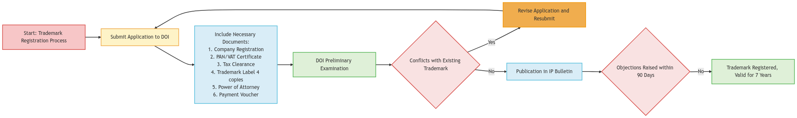

Trademark Registration Process in Nepal

The Basic Concept of Trademark
In a competitive economy, unique branding is crucial for distinguishing a business from its competitors. A trademark serves as a unique identifier for products, services, or the business entity itself, protecting them from imitation. It preserves a business’s brand, helping customers recognize and trust its offerings.
What is a Trademark?
A trademark is a symbol, name, or text chosen by a business entity as a unique identifier. Once registered, this trademark legally protects the business’s identity, ensuring no one else can use it without permission. For example, "Google" is a trademark for Google LLC, while individual Google products like "Android" and "Chrome" also have their own registered trademarks.
What Can Be Registered as a Trademark?
Product or Business Name: Names like "Pepsi" or "Sony" can be registered as trademarks to identify a company or product.
Logo or Symbol: Logos serve as visual representations, such as McDonald's golden arches or Mercedes-Benz's three-pointed star.
Business Tagline: Taglines like "The Ultimate Driving Machine" by BMW or "Finger Lickin' Good" by KFC can be trademarked to reinforce brand identity.
Shapes and Other Identifiers: Shapes, colors, scents, and packaging styles can also be trademarked.
| Benefits of Trademark Registration | When to Register a Trademark |
|---|---|
| Legal Protection: Grants exclusive rights, protecting against unauthorized use. | After Business Registration: Secure your trademark from the start to protect your brand’s intellectual property. |
| Credibility and Brand Image: Builds customer trust, preventing competitors from using similar marks. | When Products Become Popular: Register as soon as your brand gains popularity to prevent misuse by competitors. |
| Increased Brand Value: Valuable intangible asset that can be bought, sold, or licensed. | Launching New Products: Register trademarks for each new product to maintain distinct identities. |
| Attracts Investment: Assures investors and partners of brand value, making collaborations easier. |
Trademark Registration Process in Nepal
Where to Register a Trademark?
The Department of Industry (DOI), under the Ministry of Industry, is responsible for registering trademarks in Nepal. Trademark registration is governed by the Patent, Design, and Trademark Act, 1965 (PDTA).
Steps for Trademark Registration
Here’s a step-by-step guide for registering a trademark in Nepal:
Trademark Registration Process Flowchart
- Submission of Application: Submit an application to the DOI with the necessary documents:
- Company registration documents
- PAN or VAT registration certificate
- Tax clearance certificate
- Trademark label (4 copies)
- Power of Attorney letter
- Payment voucher for registration fee
- Preliminary Examination: DOI reviews documents and verifies the trademark does not conflict with existing registrations.
- Publication in IP Bulletin: If approved, the trademark is published in an Industrial Property Bulletin, inviting public objections within 90 days.
- Final Registration: If no objections are raised, the trademark is registered and valid for seven years, renewable as needed.
Trademark Classes in Nepal
- Class 1-34: Products
- Class 35-45: Services
Businesses with products or services across multiple classes must register in each relevant class for comprehensive protection.
Trademark Renewal
Trademark registrations in Nepal are valid for seven years and must be renewed within 35 days of expiry. Late renewals are allowed within six months but incur a penalty of Rs. 1000. Failure to renew results in trademark cancellation, forfeiting legal protection.
Conditions for Trademark Registration Refusal
The Department of Industry can refuse registration if the trademark:
- Damages the reputation or goodwill of an individual or institution.
- Is harmful to public morality, national interest, or conflicts with existing trademarks.
- Violates industrial property norms or international conventions.
Conclusion
Registering a trademark in Nepal safeguards your brand, allowing you to protect your business identity and take legal action if necessary. It is crucial for businesses aiming to build a reputable and recognizable brand. With a registered trademark, businesses can confidently grow, secure their assets, and attract partnerships. Consider registering a trademark as an essential part of your business strategy.